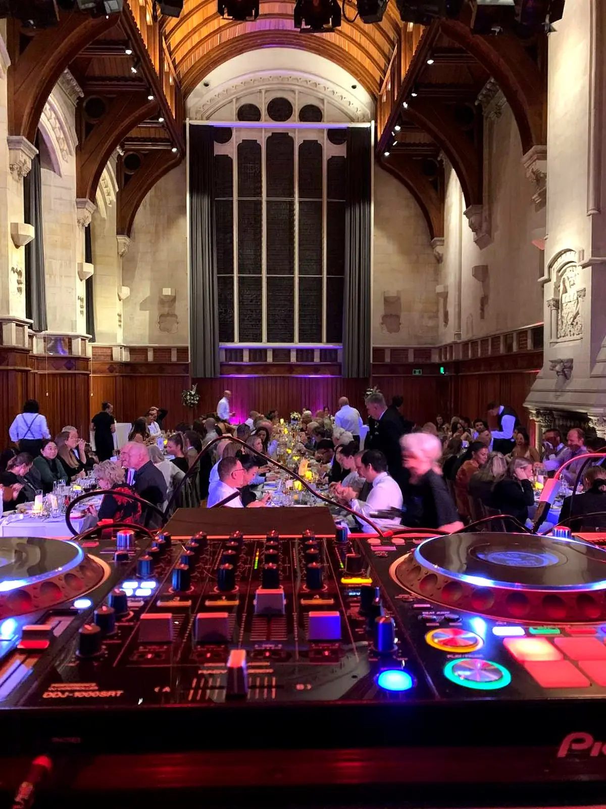

Your wedding has a sound. We'll find it with you.
From the ceremony to the last song of the night — DJ, sound and lighting so you don't have to worry about a thing on your wedding day.
Three styles of celebration. Pick what fits yours.
Pricing available on request — every wedding gets a quote built around the actual day.
Basic Package
- DJ for reception and party
- Ceremony sound
- Custom playlist
- Setup & sound check
Themed Package
- Everything in Basic
- Dance floor lighting
- Microphone for speeches
- Pre-event planning consultation
VIP Package
- Everything in Themed
- Full production (sound + lights)
- Light technician on-site
- Additional talent options
From the vows to the last dance — one team, one sound.
Ceremony
Clear sound for your vows, celebrant and the music you walk in to.
Drinks & photos
Relaxed background music while your guests mingle.
Dinner & speeches
Dinner playlist and music cues for entrances and speeches.
First dance
Your song, perfectly timed, with the lighting to match.
The party
A packed dance floor until the very last song.
Two cultures, one dance floor.
We're a bilingual (English/Spanish) team and Latin music is our specialty — salsa, bachata, cumbia, merengue and reggaetón, mixed with the hits your Kiwi guests know. Perfect for multicultural weddings where both families should feel at home on the dance floor.
Plan a Latin or bilingual wedding →
Wedding DJ questions.
How much does a wedding DJ cost in New Zealand?
Every wedding is different, so we quote each one individually. The price depends on how many hours you need (ceremony, reception and party), whether you need ceremony sound and lighting, and where your venue is. Our Basic, Themed and VIP packages are a starting point — send us your date and venue and we'll reply within 48 hours with a clear proposal.
How far in advance should we book our wedding DJ?
As soon as you have your date and venue. Summer Saturdays (November to March) are the most popular and book out first.
Can we choose the music?
Absolutely. We build the playlist with you — ceremony music, your entrance, first dance, must-play songs and a do-not-play list — so the night sounds like you, not a generic template.
Do you provide sound for the ceremony and speeches?
Ceremony sound is included in every package, and our Themed and VIP packages include a microphone for speeches.
Can you play Latin music for our wedding?
Yes — it's what we're known for. We're the team behind Latin Experience, Christchurch's original Latin party, and we mix Latin music with the hits everyone knows so every guest gets on the dance floor.
Do you travel for weddings outside Christchurch?
Yes. We're based in Christchurch and play weddings across Canterbury and New Zealand, including Queenstown, Cromwell, Dunedin and Nelson.
From the first call to the last song.
We reply within 48 hours, talk through your day in a short consultation, and build the playlist together with you — ceremony music, key moments, first dance — no generic templates.
Start planning →